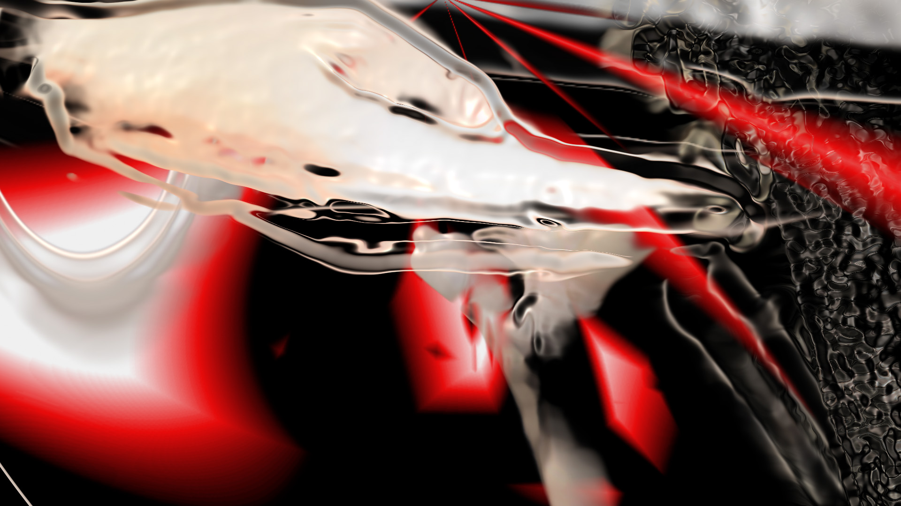
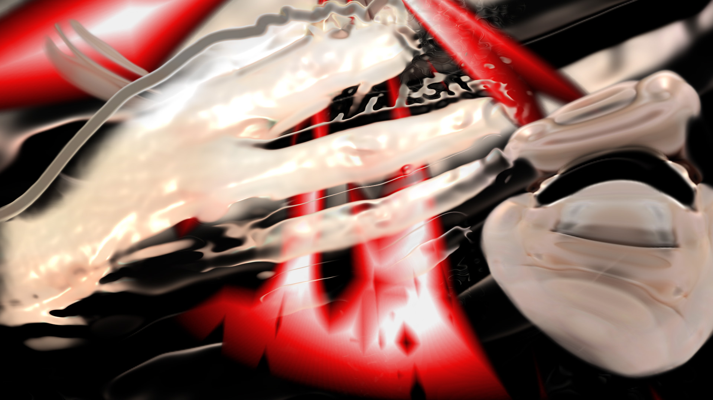
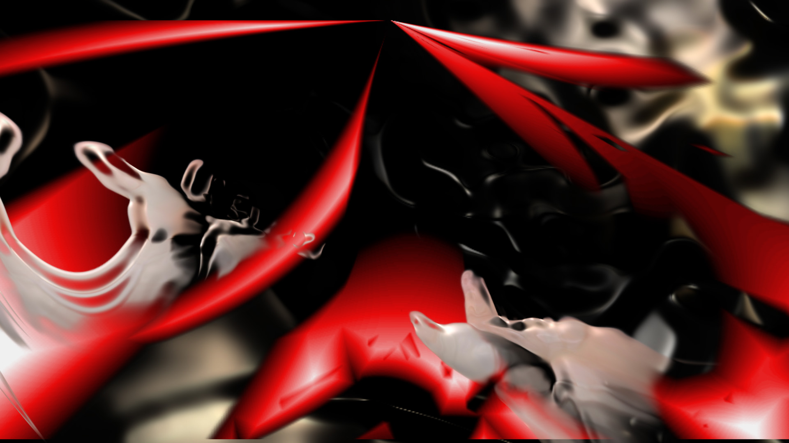
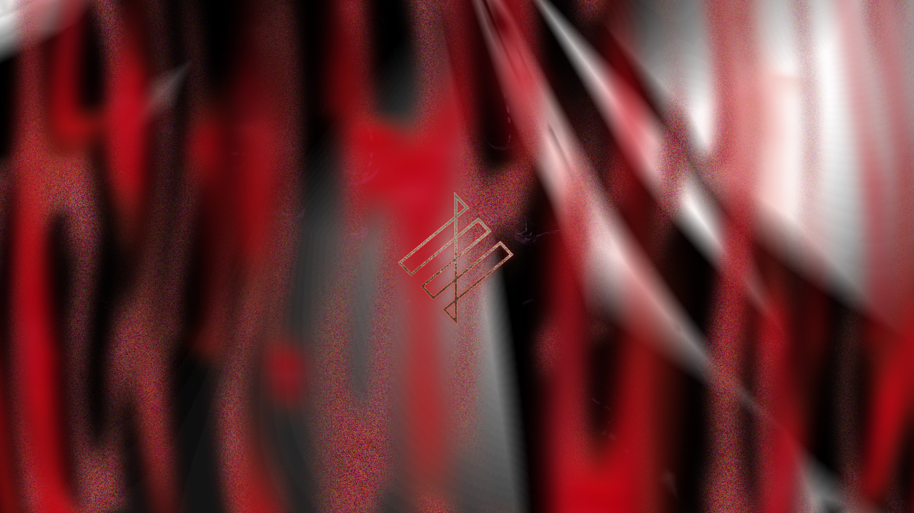
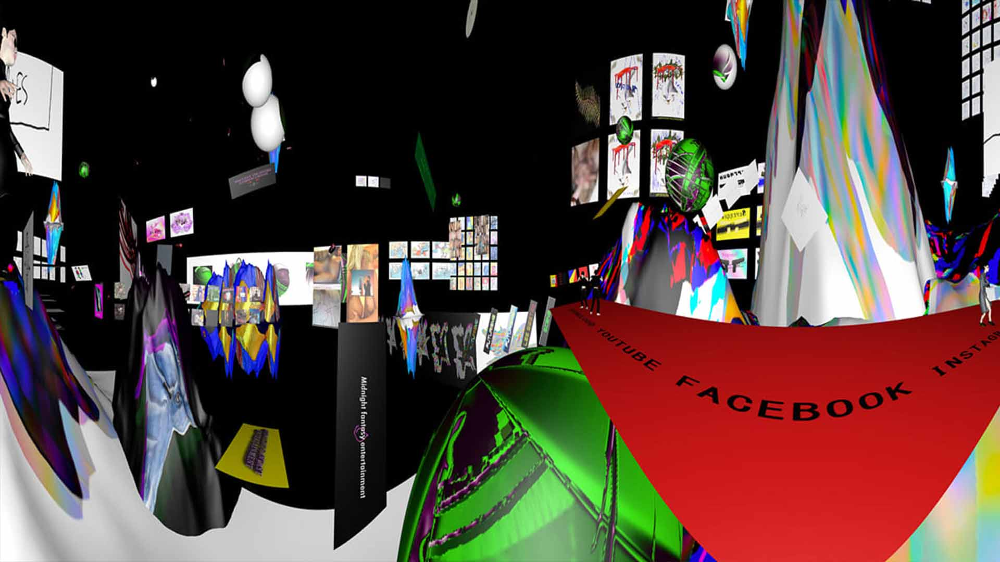
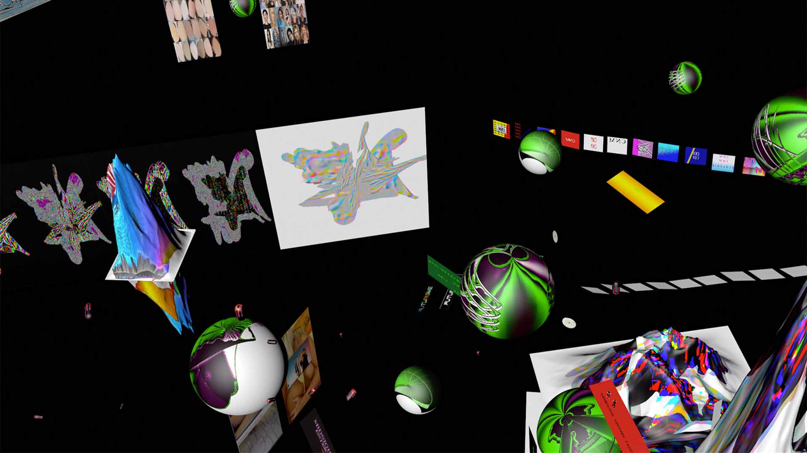
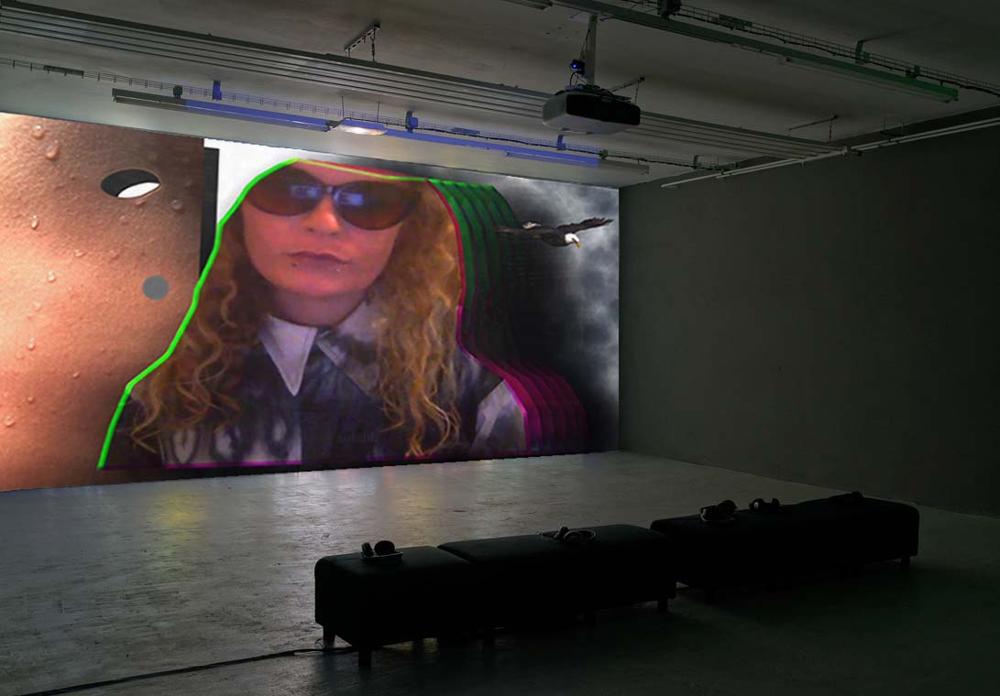
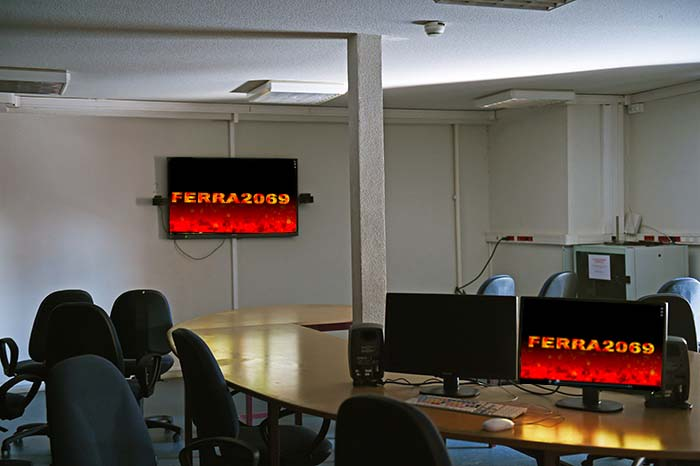

Who is Sojbdor/Sukkube ?
Behind this strange names sounds like an ancient Norwegian mystical place, is Charlène Levasseur, a young audiovisual artist from the South West of France, graduated from the Beaux Arts in Toulouse in 2018, she currently lives in Berlin. Dedicated to a real passion for everything related to electronic music and visual arts, she doesn't hesitate to create her own label in collaboration with 9 other French artists. Her work is a combination of : LBGTQI, cyber culture, human, cinema, science, colors, music, but also love stories. Through which, she speaks to us about the human condition as well as its fragile existence, while keeping a touch of dark humor ... to then make way for love. Faced with all the emergence of digital technology today, she has chosen to adopt a post-digital attitude, opting for handmade special effects, using the minimum of virtual tools.
Video is one of the most accessible media, she said. She spends most of her time in front of her computer screen, especially watching the latest videos by Queer artists or the latest electronic music videos, such as the artist Eartheater. Through the virtual world, she likes this possibility of being able to be another person, while having the possibility of meeting other communities with which she can exchange and share her projects. The Internet is becoming an endless platform, like a sort of orderly chaos where information may or may not be chosen at the moment. Many artists such as : Claudia Mate, Lu yang, Martin Kohout, influence her a lot in her work by allowing her to develop a more enhanced reflection of what digital represents today.
Producer of electronic music and passionate since the age of 15, by her encounter with the video medium which is transformed into a kind of architectural alchemy containing multiple overlapping layers, which they draw their stability from perspectives of abysmal depth. Painting remains her favorite field, because she reintroduces its layers, its windows, its compartments ... reminiscent of the stained glass windows of a church.
There is a real parallel between her digital work and her paintings, she wants to keep this part of real especially in our time where the virtual has never been so present. Shoshana Zuboff's research on capitalism and theses on the surveillance of Maria Alexandra Lopez such as : "The redistributed presence of the subject in digital objects and the Internet", are important references in her work. For her to live in a 3D or VR world, it's like an antonym, it's fascinating and scary at the same time. Like the fact that you geek, while feeling guilty about geeking.




Summer's Cell, 2020, 5:59
Music: Halosaur
Production: Charlene Levasseur
Label: Rhythm Cult


Don’t Walk Alone, 2019, 4:00
Music: Pablo Mateo
Production: Charlene Levasseur
Label: Figure
This music video, built in collaboration with artist Pablo Mateo. He was inspired by the film Annihilation by Alex Garland. Sojbdor integrated images that she took in Berlin's street. She comes to transform this reel images in a fantastic way, this video grouping their common ideas.
A1 PabloMateo JustNews, 2019, 0:20
Music: Pablo Mateo
Production: Charlene Levasseur
Label: Figure
A2 PabloMateo BlewIt feat.Emika, 2019, 0:19
Music: Pablo Mateo
Production: Charlene Levasseur
Label: Figure
B1 PabloMateo Transformation, 0:12
Music: Pablo Mateo
Production: Charlene Levasseur
Label: Figure
B2_PabloMateo_HowToCrushASuperNova, 2019, 0:20
Music: Pablo Mateo
Production: Charlene Levasseur
Label: Figure
C1_PabloMateo_WeirdReflectionsBeyondTheSky, 2019, 0:19
Music: Pablo Mateo
Production: Charlene Levasseur
Label: Figure
C2 PabloMateo DontWalkAlone, 2019, 0:17
Music: Pablo Mateo
Production: Charlene Levasseur
Label: Figure
D2_Pablo Mateo_SexualForCanibals, 2019, 0:20
Music: Pablo Mateo
Production: Charlene Levasseur
Label: Figure
D1_Pablo Mateo_XXCheater, 2019, 0:19
Music: Pablo Mateo
Production: Charlene Levasseur
Label: Figure


UNICREAM, 2019, Video Game and music
It's a kind of heavenly portfolio in an immersive 3D space ; the first version of UNICREAM has been online since 2019. In UNICREAM, the player is in real time, freely roams the archives of Sojbdor : paintings, drawings and installations. This virtual museum, is visible for free, leaves the visitor to explore this new world and meet some eccentric personalities. The work challenges us by asking us certain questions: "What is real ? Where are you ? How can you see virtual art today ?"
Input Mono Thin, 2020, Video Clip, 1:26 Music: Sojbdor
Production: Charlene Levasseur
Label: Re Edit

remix marc même si, 2019, 3:21
Sound Design: Sojbdor remix of:
Production: Charlene Levasseur
Music/source
Natasha St-Pier - Tu trouveras (Clip officiel)
Marc Lavoine - Même si_ Sojbdor
Mortal Kombat Theme Song Original
HelenaDylan
Björk - Possibly Maybe/En attendant Julia_ Sojbdor
Fallout 4 Combat Gameplay
Youtube/source
+youtube Channel + Green Screen/
+youtube.com/channel/UCa6RWD2HNI06xMRDaEQjxPQ
+youtube.com/channel/UCk90quCzMYSp36ZfWeov3Dg
Internet/source
search.lilo.org/results.php?q=pierre%20coeur%20png&tab=images&page=1
CRIM UND TRAUM, 2019, 2:10

Sound Design/3D: Sojbdor
Photographs/Cyanotypes: Julia Castel
Production 3D: Charlene Levasseur
In this analogical-digital couple, cyanotypes, photographs and videos distort themselves in a digital environment and give us to see the syncopated version of a semi-scripted work all that plunged in a humorous experimental fiction, like a night vision


GIRL SQUARE, Steak House, (S01E02), 2018, 13:31
Production: Charlene Levasseur
With Sylviane Rivoire, Diane Réa, Emmanuelle Pozzo, Nadia Mazzega, Lauren Sié, Mathilde Cartoux, Eléonore Verger, Pol Izity.
In an unexpected encounter, two mercenaries decide to change their lives and turn to stealing works of art.


GIRL SQUARE, PROJET FERRA 2069, (S01E01), 2018, 9:25
Production: Charlene Levasseur
With Diane Réa, Emmanuelle Pozzo, Lola Fontanié and Nadia Mazzega. In a terrible explosion in December 2069, the largest heat source in the country caused ruin and chaos in Guada. Miss Vapor, a fuel-addicted sower of injustice, will call upon three gangsters to help her in a mission kept at a distance from the rest of the universe. Their headquarters, the G.R.L. company specializing in the sale of spaceships
comp 1_2_2, 2019, 0:25
Sound Design: Sojbdor feat. Nadia Mazzega_ La Maison Hantée
Album: Motherlode
Label: Acolora
ACOLORA_défi_science fiction version 2, 2019, 0:36
Sound Design: Sojbdor
Production: Charlene Levasseur
Label: Acolora
Animation for a challange of Acolora, Collectif & Label of art and music called Science_Fiction
FORUM INTERGALACTIQUE, 2019, 1:54
Sound Design: Sojbdor Production: Emmanuelle Pozzo and Charlene Levasseur
Reflection on the narcissistic gesture. Research on Maria Alexandra Lopez's thesis "The redistributed presence of the subject in digital objects and the internet"; A resonance on surveillance, narcissistic gesture and ubiquity in the video practice of different socio-technical contexts
cv vidéo, 2019, 2:19
Sound Design: Sojbdor
Production: Charlene Levasseur
ele ili, 2019, 1:15
Sound Design: Eleonore Verger and Illyes El Habchi
Production: Charlene Levasseur
New York, 2019, 3:00
Production: Charlene Levasseur
Ambiance Feutré, matière sonore, 2019, 3:00
Production: Charlene Levasseur & Eleonore Verger
Music: Charlene Levasseur & Eleonore Verger